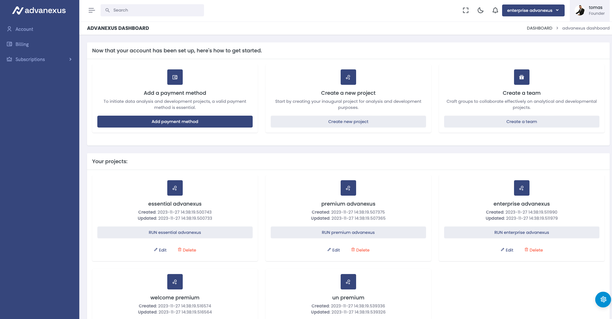
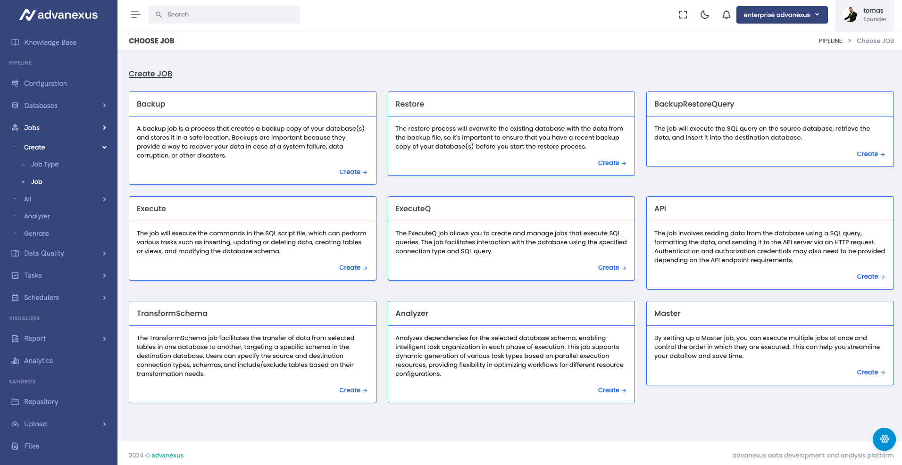
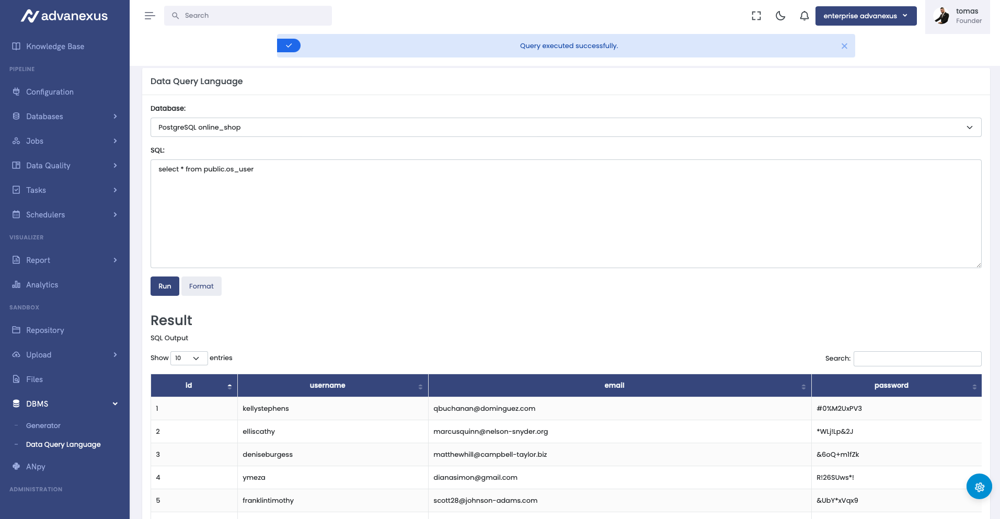
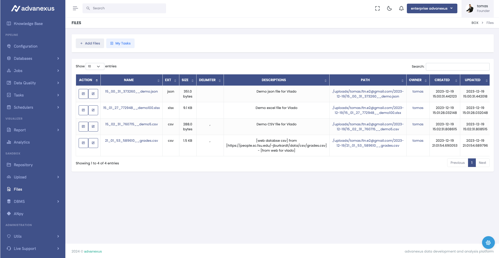
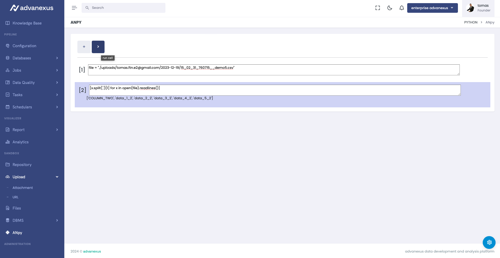
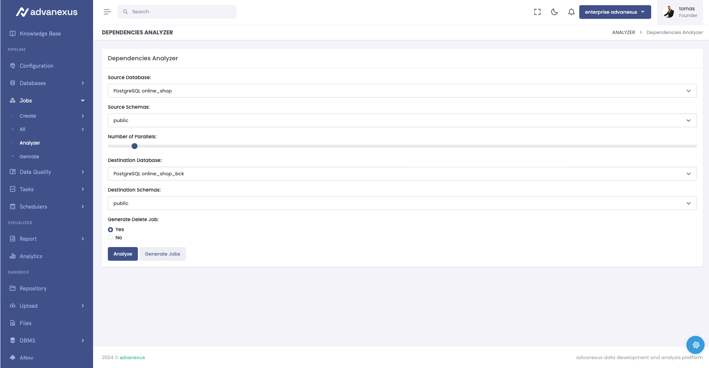
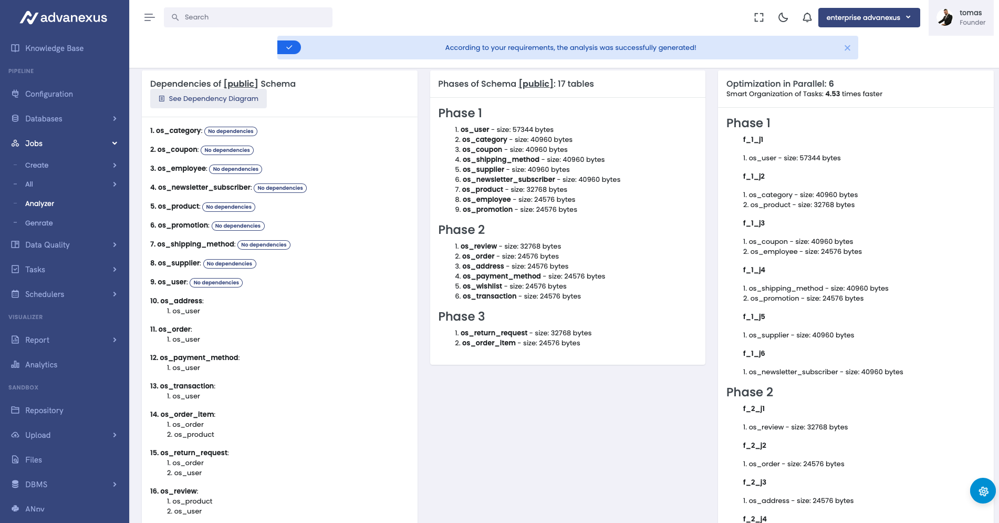
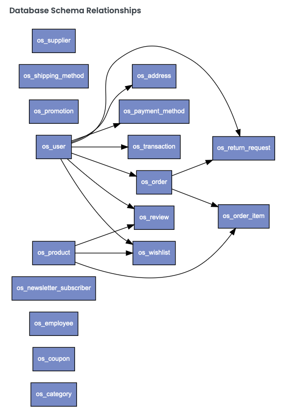

Advanced Data Development Platform


Created by 10.01.2024. 01:01, press ESC for overview
The advanexus Impact Story
The Data Dilemma
- Meet Alex, a business owner struggling with inefficient data management. Like many, he faced challenges in real-time data transmission, complex process development, and slow data transfer speeds.
A Day in Alex’s Shoes
- Alex’s daily routine involved navigating through slow data connections, complex processes, and limited options for efficient data management. He explored various solutions, but none addressed all aspects of his data challenges.
Discovering advanexus
- Then, Alex discovered advanexus an end-to-end data analysis platform designed to transform data management challenges. With user-friendly features for non-technical users, data engineers, and data scientists, it provided a comprehensive solution to his data woes.
Transforming Businesses with advanexus
- Since implementing advanexus, Alex’s business experienced swift and continuous data transmission, automated key tasks, and a significant boost in data processing speed. Investors, this is not just a platform; it’s a transformative force in data management, optimizing businesses for success.
Introducing advanexus
Transforming Data Management Challenges into Solutions
- advanexus is designed as an end-to-end data analysis platform, empowering businesses to extract value from their data.
- The advanexus platform is conceived to meet the demand for a more advanced solution.
- It is developed with the aim of eliminating shortcomings and addressing challenges in real-time data transmission, data transfer speed, and the complexity of process development.
- Providing enterprises with a superior option to simplify data management, it enables swift and continuous data transmission in real-time without the need for system interruption.
Empowering Every User in the Data Journey with advanexus
- advanexus is designed for non-technical users, data engineers, and data scientists.
- Non-technical users can use Pipelines, Jobs, and Visualize to extract value from the data using low code.
- Data engineers can use visualization tools using SQL and the Sandbox to develop python applications.
- Data scientists can use the data already made available by data engineers in their python algorithms through notebooks in the Sandbox feature.
Central Components
- KNOWLEDGE BASE: Central hub for sharing knowledge and expertise within the organization.
- PIPELINE: Integration of various data sources for seamless management and analysis.
- SANDBOX: Environment for exploratory data analysis and Python scripting.
- JOBS: Creation of workflows for data transformation.
- TASKS: Overview of job execution information.
- SCHEDULERS: Recording various job scheduling types.
- DATA QUALITY: Data quality check during transmission.
- DATA VISUALIZATION: Diverse visualizations for better data understanding.
- ADMINISTRATION: Role-based management capability for all parts of the platform.








High-Level Challenge:
Revolutionizing Data Management
Digital Transformation & Business Process Optimization
Challenges Addressed:
- Real-time Bottlenecks:
- Eliminate delays with uninterrupted real-time data transmission.
- Speed & Efficiency:
- Boost operational efficiency by enhancing data transfer speed.
- Process Complexity:
- Simplify process development for seamless operations.
Key Features and Advantages
of the advanexus Platform
| Efficient Data Connection | |
|---|---|
| Challenge | Connecting to various data sources is often time-consuming and complex. |
| Solution | advanexus enables quick and easy connections to diverse databases. |
| Benefits | Increased efficiency in working with data, accelerated access to key information. |
| Automation of Key Tasks | |
|---|---|
| Challenge | Complex tasks, such as data backup and restore, often require significant human resources. |
| Solution | advanexus Jobs enable the automation of these tasks, reducing the risk of errors and freeing up time for strategic initiatives. |
| Benefits | Increased operational reliability, cost reduction, and optimization of team resources. |
| Automatic Process Generation | |
|---|---|
| Challenge | Complex processes require automatic generation with the ability to dynamically exclude steps. |
| Solution | advanexus enables automatic process generation with dynamic step exclusion. |
| Benefits | Achieving efficiency and skipping unnecessary steps. |
| Exceptional Data Processing Speed | |
|---|---|
| Challenge | Data processing on the advanexus platform occurs in real-time and exceptionally fast. |
| Solution | Additional functionality allows the process to resume from the point of interruption, avoiding the repetition of steps. |
| Benefits | Fast and efficient data processing. |
| Real-time Data Quality | |
|---|---|
| Challenge | Monitoring data quality during job execution can be challenging. |
| Solution | advanexus enables setting data quality rules and instant monitoring of changes. |
| Benefits | Increased data accuracy, reduced risk of misinformation. |
| Sandbox for Swift Data Transformation | |
|---|---|
| Challenge | Transforming unstructured data can be a time-consuming process. |
| Solution | advanexus sandbox enables quick and controlled data transformation. |
| Benefits | Greater flexibility in working with data, increased efficiency in transformation. |
| Intuitive Analytics and Visualization | |
|---|---|
| Challenge | Creating reports in various databases can be complex. |
| Solution | advanexus provides integrated analytics and data visualization. |
| Benefits | Rapid report creation, enhanced data understanding, quick and informed decision-making. |
| Data Backup with Every Transfer | |
|---|---|
| Challenge | Data transfer can pose a risk to integrity and security. |
| Solution | advanexus ensures data backup with every transfer. |
| Benefits | Preserving data integrity and providing additional security. |
Multicloud
Analysis and Comparison
Multicloud Deployment with advanexus
-
Unified Multicloud Experience
- Single-point management for data and AI endeavors.
- Consistent security and governance policies across clouds.
- Effortless scalability and flexibility.
-
Cloud-Specific Integration
- Google Cloud Platform: Combine the open lakehouse platform with GCP services.
- Microsoft Azure: Collaborative first-party service with native integration.
- Amazon Web Services (AWS): Intuitive open lakehouse platform seamlessly integrates with AWS.
-
On-Premises Deployment
- Deploy advanexus on local infrastructure for complete control.
- Ensure data management consistency on-premises.
-
Unlocking Potential
- Choose your preferred cloud or on-premises setup.
- Unlock the full potential of your data and AI initiatives with advanexus.
Functional Overview
| Functionality | advanexus | Databricks | Databox | Semantix | ClicData | IDexcel | IBM DataStage | Alteryx | Cloudera | Snowflake | Talend | Google BigQuery | Informatica | Qlik | Tableau | Looker | Domo |
|---|---|---|---|---|---|---|---|---|---|---|---|---|---|---|---|---|---|
| Data Connection | ✅ | ✅ | ✅ | ✅ | 🔄 | 🔄 | ✅ | ✅ | ✅ | ✅ | ✅ | ✅ | 🔄 | 🔄 | ✅ | 🔄 | ✅ |
| Automation of Key Tasks | ✅ | ✅ | 🔄 | 🔄 | ✅ | 🔄 | ✅ | ✅ | 🔄 | ✅ | ✅ | ✅ | ✅ | 🔄 | ✅ | 🔄 | ✅ |
| Automatic Process Generation | ✅ | 🚫 | 🚫 | 🚫 | 🚫 | 🚫 | 🚫 | 🚫 | 🚫 | 🚫 | 🚫 | 🚫 | 🚫 | 🚫 | 🚫 | 🚫 | 🚫 |
| Data Processing Speed | ✅ | ✅ | 🔄 | 🔄 | ✅ | 🔄 | 🔄 | 🔄 | ✅ | ✅ | ✅ | ✅ | 🔄 | 🔄 | 🔄 | 🔄 | 🔄 |
| Real-time Data Quality | ✅ | 🔄 | 🔄 | 🔄 | ✅ | 🔄 | 🔄 | 🔄 | 🔄 | 🔄 | 🔄 | 🔄 | 🔄 | 🔄 | 🔄 | 🔄 | 🔄 |
| Sandbox for Data Transformation | ✅ | 🔄 | 🔄 | 🔄 | 🔄 | 🔄 | 🚫 | 🚫 | 🔄 | 🔄 | 🔄 | 🔄 | 🔄 | 🔄 | 🔄 | 🔄 | 🔄 |
| Intuitive Analytics and Visualization | ✅ | 🔄 | ✅ | 🔄 | ✅ | ✅ | 🚫 | 🔄 | ✅ | ✅ | ✅ | ✅ | ✅ | 🔄 | 🔄 | ✅ | ✅ |
Legend:
- ✅ : This platform or functionality has excellent support or offerings for the given feature.
- 🚫 : This platform or functionality is not specifically focused or provides limited support for the given feature.
- 🔄 : This platform or functionality provides a moderate level of support or functionality for the given feature.
Technical Proficiency Comparison
| Parameter | advanexus | Databricks | Databox | Semantix | ClicData | IDexcel | IBM DataStage | Alteryx | Cloudera | Snowflake | Talend | Google BigQuery | Informatica | Qlik | Tableau | Looker | Domo |
|---|---|---|---|---|---|---|---|---|---|---|---|---|---|---|---|---|---|
| Non-Technical User Friendly | ✅ | 🚫 | 🔄 | 🔄 | 🔄 | 🔄 | 🚫 | 🔄 | 🔄 | 🔄 | 🔄 | 🔄 | 🔄 | 🔄 | 🔄 | 🔄 | 🔄 |
| Data Engineer Friendly | ✅ | ✅ | 🔄 | 🔄 | 🔄 | 🔄 | ✅ | ✅ | ✅ | ✅ | ✅ | ✅ | 🔄 | 🔄 | ✅ | ✅ | ✅ |
| Data Scientist Friendly | ✅ | 🔄 | 🔄 | 🔄 | 🔄 | 🔄 | 🚫 | 🔄 | 🔄 | 🔄 | 🔄 | 🔄 | 🔄 | 🔄 | 🔄 | 🔄 | 🔄 |
Legend:
| Proficiency Level | Non-Technical User Friendly | Data Engineer Friendly | Data Scientist Friendly |
|---|---|---|---|
| ✅ Highly proficient (Advanced) | The platform is designed to be highly user-friendly for non-technical users, requiring minimal technical knowledge. | The platform is highly friendly for data engineers, offering advanced features and capabilities. | The platform is highly friendly for data scientists, offering advanced tools and features. |
| 🔄 Moderately proficient (Intermediate) | The platform provides a moderate level of user-friendliness for non-technical users, with some technical knowledge required. | The platform provides a moderate level of friendliness for data engineers, with some advanced features. | The platform provides a moderate level of friendliness for data scientists, with some advanced tools. |
| 🚫 Less proficient (Basic) | The platform may have limited user-friendliness for non-technical users, requiring significant technical knowledge. | The platform may have limited friendliness for data engineers, with fewer advanced features. | The platform may have limited friendliness for data scientists, with fewer advanced tools. |
Market Size
Perspectives on Growth and Trends
-
The data analysis and processing platform development market has experienced robust growth in recent years. The rapid advancement of technologies, the increasing volume of available data, and the growing need for informed business decisions are the main factors contributing to the growth of the data analytics market.
-
According to research and reports from agencies such as Gartner and IDC, it is predicted that the data analytics market will continue to grow in the coming years.
Key Growth Drivers in the Data Analytics Market
- Massive Data Volume:
- The quantity of data generated daily is rapidly increasing. Organizations increasingly recognize the importance of analyzing this data to gain a competitive edge and informed insights.
- Need for Informed Decision-Making:
- In today’s business environment, rapid and accurate decision-making based on data is becoming crucial. Data analytics enables organizations to gain deeper insights into their operations and identify trends, patterns, and opportunities.
- Advanced Technologies:
- Advancements in technologies such as machine learning, artificial intelligence, and automation provide new possibilities for data analysis and valuable insights.
- Demand for Personalization:
- Organizations strive for personalized experiences for their users. Data analytics facilitates tailoring products, services, and marketing activities to individual user needs.
Market Analysis of Data Platforms
| Market | Size in 2020 (in billion dollars) | Size in 2030 (in billion dollars) | CAGR (%) | Fastest Growing Market | Largest Market | Source |
|---|---|---|---|---|---|---|
| Customer Data Platforms | 4.67 | 47.68 | 33.70% | GLOBAL | GLOBAL | Data Bridge Market Research |
| Customer Data Platforms (Global) | 1.16 | 6.94 | 25.4% | GLOBAL | GLOBAL | Fortune Business Insights |
| Customer Data (Global) | 1.56 | 4.8 | 27.41% | Asia-Pacific | North America | Mordor Intelligence |
| Autonomous Data Platforms | 1.1 | 4.7 | 23.0% | GLOBAL | GLOBAL | Grand View Research |
| Data Science Platforms | 96.3 | 378.7 | 16.43% | GLOBAL | GLOBAL | Precedence Research |
| Autonomous Data Platforms (Global) | 0.62 | 4.8 | 22.8% | GLOBAL | GLOBAL | Allied Market Research |
Universal Solution for Advanced Data Analysis Across Various Industries
Banks, Insurance companies, Investment firms, Hospitals, Laboratories, Pharmaceutical companies, Retail businesses, Wholesale businesses, Travel agencies, Airlines, Governments, State agencies, Marketing agencies, Manufacturing companies, Telecommunication companies, Internet providers, Research institutions, Universities, Sports organizations, Nonprofit organizations, Startup companies, …
More details at advanexus:MARKETS
Conclusion and Call to Action
- advanexus stands as a valuable solution for businesses seeking to unlock the full potential of their data.
- With its myriad benefits encompassing data quality, time optimization, workload automation, seamless data integration, cataloging, and efficient data retrieval, advanexus empowers teams for heightened productivity.
- Seize the opportunity to stay ahead of the curve and propel your business towards success in the marketplace by embracing advanexus today.
Thanks! Q&A?